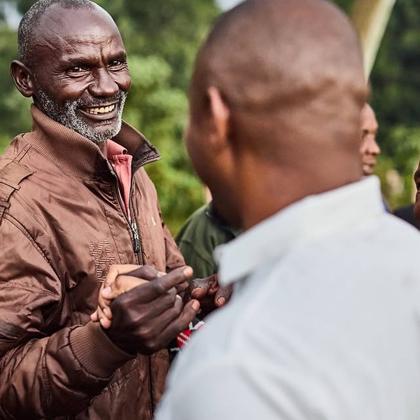
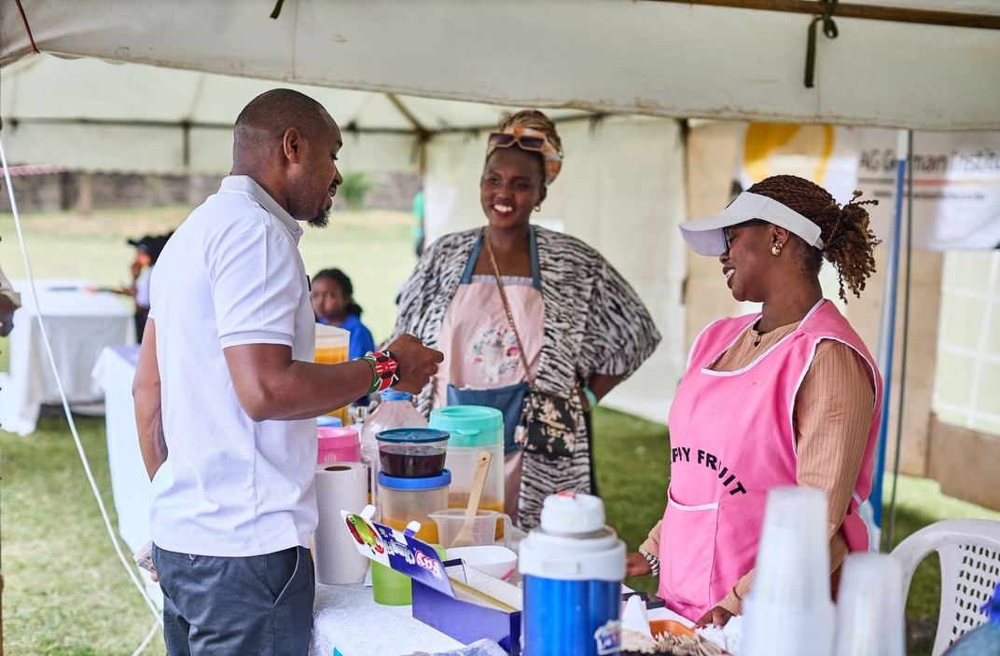

About Us
Who we are
Ukweli Party is a social democratic national political organization and movement of diverse citizens, working together towards a Kenya that is governed democratically and competently.
The goal of our political work is to urgently install in government and state power a pro-people social, cultural, political and economic system that guarantees all Kenyans social justice, freedom, dignity and happiness.
We believe that Kenya has everything that is needed to build a united nation of free, equal, prosperous citizens, at peace with one another in all our diversity. The defeat of the backward, extractive, violent and anti-people ruling networks is a prerequisite for our country to realize its full potential as a modern democratic society.
Ukweli Party shall work tirelessly to serve our country through the exercise of governance and political leadership as a patriotic national service. We aspire to provide national and county government leadership and management of public affairs that shall truly serve the people of Kenya and inspire a national ethos of integrity, fairness, respect for diversity, rule of law and social justice.
An Ukweli Party administration shall strive for an equal, equitable and thriving Kenya that works for all citizens. We shall create a society where we work collaboratively to address and overcome the challenges in our now long journey to a better democracy.
Our party symbol
The 2026 Party Constitution sets the official symbol as two hands holding a bandana against a black and green circle. Hands that work. A bandana that binds. Green for the land our forebears fought for.
Earlier materials used the green sugarcane, which still carries our history: land, struggle, and the sweetness of freedoms won. The motto on our materials is Kazi Na Haki. Our slogan remains Power to the People / Nguvu kwa Mwananchi. The ORPP register also lists Ukweli, Uwazi na Haki.
The team
National officials elected by party delegates at the National Delegates Conference held in Nairobi.

Boniface Mwangi Wakiuru ChairpersonLeadership on the ground



Financial reports
Ukweli Party publishes independent financial reports. Open any statement below.